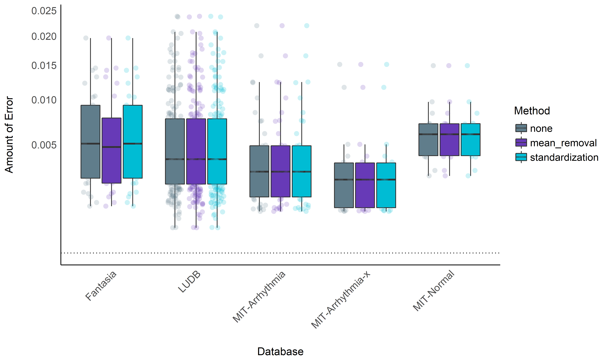

Benchmarking of ECG Preprocessing Methods
Contents
Benchmarking of ECG Preprocessing Methods#
This study can be referenced by citing the package.
We’d like to publish this study, but unfortunately we currently don’t have the time. If you want to help to make it happen, please contact us!
Introduction#
This work is a replication and extension of the work by Porr & Howell (2019), that compared the performance of different popular R-peak detectors.
Databases#
Glasgow University Database#
The GUDB Database (Howell & Porr, 2018) contains ECGs from 25 subjects. Each subject was recorded performing 5 different tasks for two minutes (sitting, doing a maths test on a tablet, walking on a treadmill, running on a treadmill, using a hand bike). The sampling rate is 250Hz for all the conditions.
The script to download and format the database using the ECG-GUDB Python package by Bernd Porr can be found here.
MIT-BIH Arrhythmia Database#
The MIT-BIH Arrhythmia Database [MIT-Arrhythmia; Moody & Mark (2001)]
contains 48 excerpts of 30-min of two-channel ambulatory ECG recordings
sampled at 360Hz and 25 additional recordings from the same participants
including common but clinically significant arrhythmias (denoted as the
MIT-Arrhythmia-x database).
The script to download and format the database using the can be found here.
MIT-BIH Normal Sinus Rhythm Database#
This database includes 18 clean long-term ECG recordings of subjects. Due to memory limits, we only kept the second hour of recording of each participant.
The script to download and format the database using the can be found here.
Lobachevsky University Electrocardiography Database#
The Lobachevsky University Electrocardiography Database [LUDB; Kalyakulina et al. (2018)] consists of 200 10-second 12-lead ECG signal records representing different morphologies of the ECG signal. The ECGs were collected from healthy volunteers and patients, which had various cardiovascular diseases. The boundaries of P, T waves and QRS complexes were manually annotated by cardiologists for all 200 records.
Fantasia Database#
The Fantasia database (Iyengar, Peng, Morin, Goldberger, & Lipsitz, 1996) consists of twenty young and twenty elderly healthy subjects. All subjects remained in a resting state in sinus rhythm while watching the movie Fantasia (Disney, 1940) to help maintain wakefulness. The continuous ECG signals were digitized at 250 Hz. Each heartbeat was annotated using an automated arrhythmia detection algorithm, and each beat annotation was verified by visual inspection.
Concanate them together#
import pandas as pd
# Load ECGs
ecgs = ["../../data/gudb/ECGs.csv",
"../../data/mit_arrhythmia/ECGs.csv",
"../../data/mit_normal/ECGs.csv",
"../../data/ludb/ECGs.csv",
"../../data/fantasia/ECGs.csv"]
# Load True R-peaks location
rpeaks = [pd.read_csv("../../data/gudb/Rpeaks.csv"),
pd.read_csv("../../data/mit_arrhythmia/Rpeaks.csv"),
pd.read_csv("../../data/mit_normal/Rpeaks.csv"),
pd.read_csv("../../data/ludb/Rpeaks.csv"),
pd.read_csv("../../data/fantasia/Rpeaks.csv")]
Study 1: Comparing Different R-Peaks Detection Algorithms#
Procedure#
Setup Functions#
import neurokit2 as nk
def neurokit(ecg, sampling_rate):
signal, info = nk.ecg_peaks(ecg, sampling_rate=sampling_rate, method="neurokit")
return info["ECG_R_Peaks"]
def pantompkins1985(ecg, sampling_rate):
signal, info = nk.ecg_peaks(ecg, sampling_rate=sampling_rate, method="pantompkins1985")
return info["ECG_R_Peaks"]
def hamilton2002(ecg, sampling_rate):
signal, info = nk.ecg_peaks(ecg, sampling_rate=sampling_rate, method="hamilton2002")
return info["ECG_R_Peaks"]
def martinez2003(ecg, sampling_rate):
signal, info = nk.ecg_peaks(ecg, sampling_rate=sampling_rate, method="martinez2003")
return info["ECG_R_Peaks"]
def christov2004(ecg, sampling_rate):
signal, info = nk.ecg_peaks(ecg, sampling_rate=sampling_rate, method="christov2004")
return info["ECG_R_Peaks"]
def gamboa2008(ecg, sampling_rate):
signal, info = nk.ecg_peaks(ecg, sampling_rate=sampling_rate, method="gamboa2008")
return info["ECG_R_Peaks"]
def elgendi2010(ecg, sampling_rate):
signal, info = nk.ecg_peaks(ecg, sampling_rate=sampling_rate, method="elgendi2010")
return info["ECG_R_Peaks"]
def engzeemod2012(ecg, sampling_rate):
signal, info = nk.ecg_peaks(ecg, sampling_rate=sampling_rate, method="engzeemod2012")
return info["ECG_R_Peaks"]
def kalidas2017(ecg, sampling_rate):
signal, info = nk.ecg_peaks(ecg, sampling_rate=sampling_rate, method="kalidas2017")
return info["ECG_R_Peaks"]
def rodrigues2020(ecg, sampling_rate):
signal, info = nk.ecg_peaks(ecg, sampling_rate=sampling_rate, method="rodrigues2020")
return info["ECG_R_Peaks"]
Run the Benchmarking#
Note: This takes a long time (several hours).
results = []
for method in [neurokit, pantompkins1985, hamilton2002, martinez2003, christov2004,
gamboa2008, elgendi2010, engzeemod2012, kalidas2017, rodrigues2020]:
for i in range(len(rpeaks)):
data_ecg = pd.read_csv(ecgs[i])
result = nk.benchmark_ecg_preprocessing(method, data_ecg, rpeaks[i])
result["Method"] = method.__name__
results.append(result)
results = pd.concat(results).reset_index(drop=True)
results.to_csv("data_detectors.csv", index=False)
Results#
library(tidyverse)
library(easystats)
library(lme4)
data <- read.csv("data_detectors.csv", stringsAsFactors = FALSE) %>%
mutate(Method = fct_relevel(Method, "neurokit", "pantompkins1985", "hamilton2002", "martinez2003", "christov2004", "gamboa2008", "elgendi2010", "engzeemod2012", "kalidas2017", "rodrigues2020"))
colors <- c("neurokit"="#E91E63", "pantompkins1985"="#f44336", "hamilton2002"="#FF5722", "martinez2003"="#FF9800", "christov2004"="#FFC107", "gamboa2008"="#4CAF50", "elgendi2010"="#009688", "engzeemod2012"="#2196F3", "kalidas2017"="#3F51B5", "rodrigues2020"="#9C27B0")
Errors and bugs#
data %>%
mutate(Error = case_when(
Error == "index -1 is out of bounds for axis 0 with size 0" ~ "index -1 out of bounds",
Error == "index 0 is out of bounds for axis 0 with size 0" ~ "index 0 out of bounds",
TRUE ~ Error)) %>%
group_by(Database, Method) %>%
mutate(n = n()) %>%
group_by(Database, Method, Error) %>%
summarise(Percentage = n() / unique(n)) %>%
ungroup() %>%
mutate(Error = fct_relevel(Error, "None")) %>%
ggplot(aes(x=Error, y=Percentage, fill=Method)) +
geom_bar(stat="identity", position = position_dodge2(preserve = "single")) +
facet_wrap(~Database, nrow=5) +
theme_modern() +
theme(axis.text.x = element_text(size = 7, angle = 45, hjust = 1)) +
scale_fill_manual(values=colors)

Conclusion: It seems that gamboa2008 and martinez2003 are
particularly prone to errors, especially in the case of a noisy ECG
signal. Aside from that, the other algorithms are quite resistant and
bug-free.
data <- filter(data, Error == "None")
data <- filter(data, !is.na(Score))
Computation Time#
Descriptive Statistics#
# Normalize duration
data <- data %>%
mutate(Duration = (Duration) / (Recording_Length * Sampling_Rate))
data %>%
ggplot(aes(x=Method, y=Duration, fill=Method)) +
geom_jitter2(aes(color=Method, group=Database), size=3, alpha=0.2, position=position_jitterdodge()) +
geom_boxplot(aes(alpha=Database), outlier.alpha = 0) +
geom_hline(yintercept=0, linetype="dotted") +
theme_modern() +
theme(axis.text.x = element_text(angle = 45, hjust = 1)) +
scale_alpha_manual(values=seq(0, 1, length.out=8)) +
scale_color_manual(values=colors) +
scale_fill_manual(values=colors) +
scale_y_sqrt() +
ylab("Duration (seconds per data sample)")

Statistical Modelling#
model <- lmer(Duration ~ Method + (1|Database) + (1|Participant), data=data)
means <- modelbased::estimate_means(model)
arrange(means, Mean)
## Estimated Marginal Means
##
## Method | Mean | SE | 95% CI
## ----------------------------------------------------
## gamboa2008 | 2.90e-05 | 1.18e-05 | [0.00, 0.00]
## neurokit | 3.25e-05 | 1.17e-05 | [0.00, 0.00]
## martinez2003 | 6.59e-05 | 1.18e-05 | [0.00, 0.00]
## kalidas2017 | 7.80e-05 | 1.17e-05 | [0.00, 0.00]
## rodrigues2020 | 1.29e-04 | 1.17e-05 | [0.00, 0.00]
## hamilton2002 | 1.68e-04 | 1.17e-05 | [0.00, 0.00]
## engzeemod2012 | 5.10e-04 | 1.18e-05 | [0.00, 0.00]
## pantompkins1985 | 5.64e-04 | 1.17e-05 | [0.00, 0.00]
## elgendi2010 | 9.80e-04 | 1.18e-05 | [0.00, 0.00]
## christov2004 | 1.25e-03 | 1.17e-05 | [0.00, 0.00]
##
## Marginal means estimated at Method
means %>%
ggplot(aes(x=Method, y=Mean, color=Method)) +
geom_line(aes(group=1), size=1) +
geom_pointrange(aes(ymin=CI_low, ymax=CI_high), size=1) +
geom_hline(yintercept=0, linetype="dotted") +
theme_modern() +
theme(axis.text.x = element_text(angle = 45, hjust = 1)) +
scale_color_manual(values=colors) +
ylab("Duration (seconds per data sample)")

Conclusion: It seems that gamboa2008 and neurokit are the
fastest methods, followed by martinez2003, kalidas2017,
rodrigues2020 and hamilton2002. The other methods are then
substantially slower.
Accuracy#
Note: The accuracy is computed as the absolute distance from the original “true” R-peaks location. As such, the closest to zero, the better the accuracy.
Descriptive Statistics#
data <- data %>%
mutate(Outlier = performance::check_outliers(Score, threshold = list(zscore = stats::qnorm(p = 1 - 0.000001)))) %>%
filter(Outlier == 0)
data %>%
ggplot(aes(x=Database, y=Score)) +
geom_boxplot(aes(fill=Method), outlier.alpha = 0, alpha=1) +
geom_jitter2(aes(color=Method, group=Method), size=3, alpha=0.2, position=position_jitterdodge()) +
geom_hline(yintercept=0, linetype="dotted") +
theme_modern() +
theme(axis.text.x = element_text(angle = 45, hjust = 1)) +
scale_color_manual(values=colors) +
scale_fill_manual(values=colors) +
scale_y_sqrt() +
ylab("Amount of Error")

Statistical Modelling#
model <- lmer(Score ~ Method + (1|Database) + (1|Participant), data=data)
means <- modelbased::estimate_means(model)
arrange(means, abs(Mean))
## Estimated Marginal Means
##
## Method | Mean | SE | 95% CI
## ------------------------------------------------
## neurokit | 0.01 | 4.89e-03 | [0.00, 0.02]
## kalidas2017 | 0.02 | 4.90e-03 | [0.01, 0.03]
## martinez2003 | 0.02 | 5.25e-03 | [0.01, 0.03]
## christov2004 | 0.05 | 5.11e-03 | [0.04, 0.06]
## engzeemod2012 | 0.05 | 5.30e-03 | [0.04, 0.06]
## pantompkins1985 | 0.07 | 5.11e-03 | [0.06, 0.08]
## rodrigues2020 | 0.07 | 5.11e-03 | [0.06, 0.08]
## hamilton2002 | 0.08 | 5.18e-03 | [0.07, 0.09]
## elgendi2010 | 0.09 | 5.13e-03 | [0.08, 0.10]
## gamboa2008 | 0.22 | 8.02e-03 | [0.20, 0.24]
##
## Marginal means estimated at Method
means %>%
ggplot(aes(x=Method, y=Mean, color=Method)) +
geom_line(aes(group=1), size=1) +
geom_pointrange(aes(ymin=CI_low, ymax=CI_high), size=1) +
geom_hline(yintercept=0, linetype="dotted") +
theme_modern() +
theme(axis.text.x = element_text(angle = 45, hjust = 1)) +
scale_color_manual(values=colors) +
ylab("Amount of Error")

Conclusion: It seems that neurokit, kalidas2017 and
martinez2003 the most accurate algorithms to detect R-peaks. This
pattern of results differs a bit from Porr & Howell (2019) that outlines
engzeemod2012, elgendi2010, kalidas2017 as the most accurate and
christov2004, hamilton2002 and pantompkins1985 as the worse.
Discrepancies could be due to the differences in data and analysis, as
here we used more databases and modelled them by respecting their
hierarchical structure using mixed models.
Conclusion#
Based on the accuracy / execution time criterion, it seems like
neurokit is the best R-peak detection method, followed by
kalidas2017.
Study 2: Normalization#
Procedure#
Setup Functions#
import neurokit2 as nk
def none(ecg, sampling_rate):
signal, info = nk.ecg_peaks(ecg, sampling_rate=sampling_rate, method="neurokit")
return info["ECG_R_Peaks"]
def mean_detrend(ecg, sampling_rate):
ecg = nk.signal_detrend(ecg, order=0)
signal, info = nk.ecg_peaks(ecg, sampling_rate=sampling_rate, method="neurokit")
return info["ECG_R_Peaks"]
def standardize(ecg, sampling_rate):
ecg = nk.standardize(ecg)
signal, info = nk.ecg_peaks(ecg, sampling_rate=sampling_rate, method="neurokit")
return info["ECG_R_Peaks"]
Run the Benchmarking#
Note: This takes a long time (several hours).
results = []
for method in [none, mean_detrend, standardize]:
for i in range(len(rpeaks)):
data_ecg = pd.read_csv(ecgs[i])
result = nk.benchmark_ecg_preprocessing(method, data_ecg, rpeaks[i])
result["Method"] = method.__name__
results.append(result)
results = pd.concat(results).reset_index(drop=True)
results.to_csv("data_normalization.csv", index=False)
Results#
library(tidyverse)
library(easystats)
library(lme4)
data <- read.csv("data_normalization.csv", stringsAsFactors = FALSE) %>%
mutate(Database = ifelse(str_detect(Database, "GUDB"), paste0(str_replace(Database, "GUDB_", "GUDB ("), ")"), Database),
Method = fct_relevel(Method, "none", "mean_removal", "standardization"),
Participant = paste0(Database, Participant)) %>%
filter(Error == "None") %>%
filter(!is.na(Score))
colors <- c("none"="#607D8B", "mean_removal"="#673AB7", "standardization"="#00BCD4")
Accuracy#
Descriptive Statistics#
data <- data %>%
mutate(Outlier = performance::check_outliers(Score, threshold = list(zscore = stats::qnorm(p = 1 - 0.000001)))) %>%
filter(Outlier == 0)
data %>%
ggplot(aes(x=Database, y=Score)) +
geom_boxplot(aes(fill=Method), outlier.alpha = 0, alpha=1) +
geom_jitter2(aes(color=Method, group=Method), size=3, alpha=0.2, position=position_jitterdodge()) +
geom_hline(yintercept=0, linetype="dotted") +
theme_modern() +
theme(axis.text.x = element_text(angle = 45, hjust = 1)) +
scale_color_manual(values=colors) +
scale_fill_manual(values=colors) +
scale_y_sqrt() +
ylab("Amount of Error")

Statistical Modelling#
model <- lmer(Score ~ Method + (1|Database) + (1|Participant), data=data)
modelbased::estimate_contrasts(model)
## Marginal Contrasts Analysis
##
## Level1 | Level2 | Difference | 95% CI | SE | t(553.00) | p
## ------------------------------------------------------------------------------------------
## mean_removal | standardization | -1.01e-07 | [ 0.00, 0.00] | 1.29e-07 | -0.78 | 0.716
## none | mean_removal | -8.72e-08 | [ 0.00, 0.00] | 1.29e-07 | -0.68 | 0.777
## none | standardization | -1.88e-07 | [ 0.00, 0.00] | 1.28e-07 | -1.47 | 0.308
##
## Marginal contrasts estimated at Method
## p-value adjustment method: Holm (1979)
means <- modelbased::estimate_means(model)
arrange(means, abs(Mean))
## Estimated Marginal Means
##
## Method | Mean | SE | 95% CI
## ----------------------------------------------------
## none | 5.23e-03 | 5.14e-04 | [0.00, 0.01]
## mean_removal | 5.23e-03 | 5.14e-04 | [0.00, 0.01]
## standardization | 5.23e-03 | 5.14e-04 | [0.00, 0.01]
##
## Marginal means estimated at Method
means %>%
ggplot(aes(x=Method, y=Mean, color=Method)) +
geom_line(aes(group=1), size=1) +
geom_pointrange(aes(ymin=CI_low, ymax=CI_high), size=1) +
theme_modern() +
theme(axis.text.x = element_text(angle = 45, hjust = 1)) +
scale_color_manual(values=colors) +
ylab("Amount of Error")

Conclusion#
No significant benefits added by normalization for the neurokit
method.
Study 3: Low Frequency Trends Removal#
Procedure#
Setup Functions#
import neurokit2 as nk
def none(ecg, sampling_rate):
signal, info = nk.ecg_peaks(ecg, sampling_rate=sampling_rate, method="neurokit")
return info["ECG_R_Peaks"]
# Detrending-based
def polylength(ecg, sampling_rate):
length = len(ecg) / sampling_rate
ecg = nk.signal_detrend(ecg, method="polynomial", order=int(length / 2))
signal, info = nk.ecg_peaks(ecg, sampling_rate=sampling_rate, method="neurokit")
return info["ECG_R_Peaks"]
def tarvainen(ecg, sampling_rate):
ecg = nk.signal_detrend(ecg, method="tarvainen2002")
signal, info = nk.ecg_peaks(ecg, sampling_rate=sampling_rate, method="neurokit")
return info["ECG_R_Peaks"]
def locreg(ecg, sampling_rate):
ecg = nk.signal_detrend(ecg,
method="locreg",
window=0.5*sampling_rate,
stepsize=0.02*sampling_rate)
signal, info = nk.ecg_peaks(ecg, sampling_rate=sampling_rate, method="neurokit")
return info["ECG_R_Peaks"]
def rollingz(ecg, sampling_rate):
ecg = nk.standardize(ecg, window=sampling_rate*2)
signal, info = nk.ecg_peaks(ecg, sampling_rate=sampling_rate, method="neurokit")
return info["ECG_R_Peaks"]
# Filtering-based
Run the Benchmarking#
Note: This takes a very long time (several hours).
results = []
for method in [none, polylength, tarvainen, locreg, rollingz]:
result = nk.benchmark_ecg_preprocessing(method, ecgs, rpeaks)
result["Method"] = method.__name__
results.append(result)
results = pd.concat(results).reset_index(drop=True)
results.to_csv("data_lowfreq.csv", index=False)
References#
Howell, L., & Porr, B. (2018). High precision ECG database with annotated r peaks, recorded and filmed under realistic conditions.
Iyengar, N., Peng, C., Morin, R., Goldberger, A. L., & Lipsitz, L. A. (1996). Age-related alterations in the fractal scaling of cardiac interbeat interval dynamics. American Journal of Physiology-Regulatory, Integrative and Comparative Physiology, 271(4), R1078–R1084.
Kalyakulina, A. I., Yusipov, I. I., Moskalenko, V. A., Nikolskiy, A. V., Kozlov, A. A., Kosonogov, K. A., … Ivanchenko, M. V. (2018). LU electrocardiography database: A new open-access validation tool for delineation algorithms. arXiv Preprint arXiv:1809.03393.
Moody, G. B., & Mark, R. G. (2001). The impact of the MIT-BIH arrhythmia database. IEEE Engineering in Medicine and Biology Magazine, 20(3), 45–50.
Porr, B., & Howell, L. (2019). R-peak detector stress test with a new noisy ECG database reveals significant performance differences amongst popular detectors. bioRxiv, 722397.